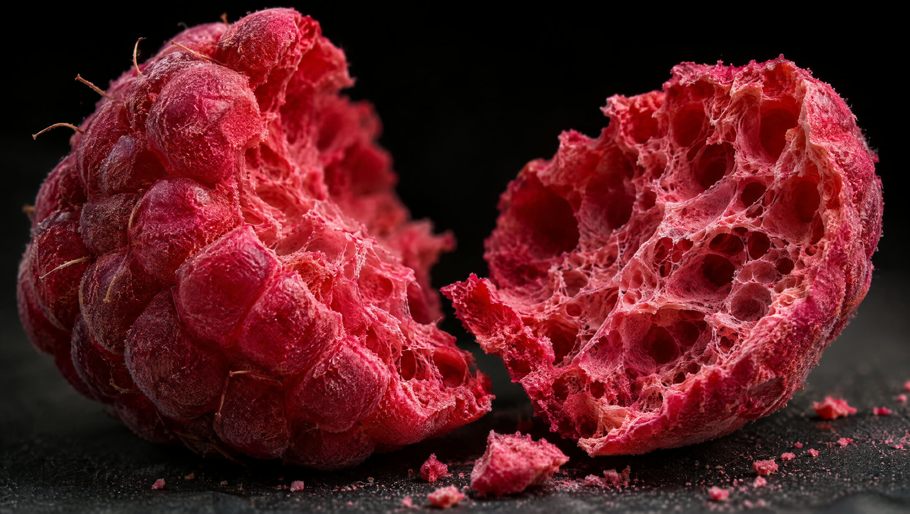
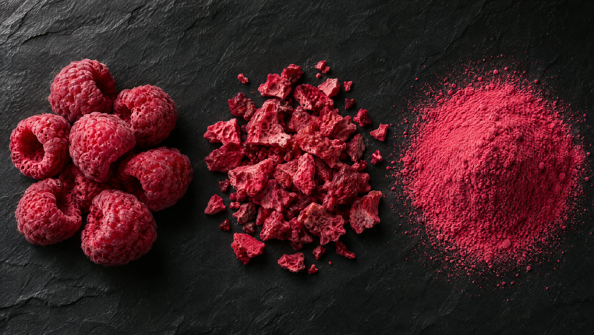

Зрелая ягода
Берём ягоду в пике зрелости - именно этот вкус останется в готовом продукте. На 87 % она состоит из воды.
Убираем из ягоды воду и оставляем всё остальное: форму, цвет, аромат. Для кондитерских, молочных и снековых производств.
Смотреть процессПринцип
Берём ягоду в пике зрелости - именно этот вкус останется в готовом продукте. На 87 % она состоит из воды.
Быстрое охлаждение до −40 °C. Мелкие кристаллы не рвут клетки, поэтому ягода сохранит форму.
Вакуум ниже тройной точки воды. Лёд испаряется, минуя жидкую фазу: ягода не варится и не оседает.
Полки мягко нагреваются и забирают связанную влагу. Остаётся около 3 % - продукт хранится без консервантов.
Из 100 г свежей малины - 13 г сухой. Цвет, аромат и форма на месте.

Структура
На месте льда остаются поры. Поэтому ягода хрустит, не слёживается в сухих смесях и за минуты возвращает вкус в креме, йогурте или воде.
Форматы

Образцы и спецификация - по запросу